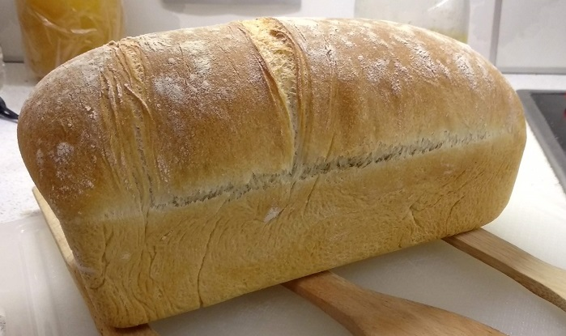

Recipe: Homemade bread
Making delicious homemade bread turns out to be an easy task. The recipe for quick and easy bread proves that the preparation of bread at home does not require even a home bakery, but only a little desire. Homemade bread is really incomparably tastier than bread bought from the store, and the aroma of freshly baked bread is the aroma of home comfort. The recipe for quick and easy homemade bread is really so easy to make that it can be realized even by the most novice cooks who have no experience in kneading, in other words, quick and easy bread can easily be "your first bread".
The first step in the recipe for quick and easy bread is the preparation of yeast. Add the yeast to the warm water and stir until dissolved, add the sugar, salt and oil and stir again. Meanwhile, preheat the oven to 50 degrees.
Gradually add the flour to the water with the yeast and stir, preferably with a wooden spoon. When the mixture becomes very thick, sprinkle the hob with flour, pour the mixture on the hob and start kneading with your hands. If you are kneading for the first time, do not worry that the dough is not smooth at first and sticks to your hands. Continue to knead boldly and after about 5 minutes of kneading you will get a nice smooth dough.
Once the dough is well kneaded, grease the pan in which you will bake the bread, put the dough, grease it and put it in the preheated oven at 50 degrees to rise. The dough should double in volume, which is done quickly in a warm oven for about 40-50 minutes.
